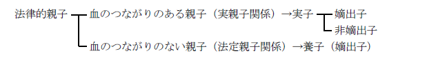
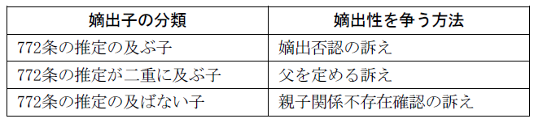

第８編 親 族
第４章 親子・親権
第１節 親子関係
生物学的親子関係：男女の間に子が出生したときの男女と子の関係
血縁の要素があるだけで、意思による選択の要素は存在しない。この点で、婚姻や離婚と大きく異なる。
法律的親子関係：民法の定める親子関係
法律的親子関係は生物学的親子関係を基礎としているが、両者は一致しない場合がある。例えば、生物学的親子関係がないのに意思によって法律的親子関係を生じさせる制度として養子がある。逆に生物学的親子関係があるのに婚姻秩序の維持や身分関係の法的安定の点から法律的親子とは認められない場合もある。法律的親子には以下の種類がある。

血のつながりのない親子（法定親子関係）→養子（嫡出子）
第２節 実子
Ⅰ 嫡出子
1. 意義
嫡出子とは、法律上の夫婦間に懐胎・出生した子をいう。
2. 嫡出子の分類

1. 嫡出の推定
民法では、子が誰の嫡出子でもないという状態を作らないために、嫡出推定の規定を置いている。
(1) 婚姻中の懐胎
妻が婚姻中に懐胎した子は、当該婚姻における夫の子と推定する（772条１項前段）。
しかし、子が懐胎されたのが、母の婚姻中か、そうでないか不明のときがある。そこで、婚姻の成立の日から200日を経過した後、又は婚姻の解消、取消しの日から300日以内に生まれた子は婚姻中に懐胎したものと推定される（772条２項）。
(2) 婚姻前の懐胎
女が婚姻前に懐胎した子であって、婚姻が成立した後に生まれたものは、当該婚姻における夫の子と推定する（772条１項後段）。この規定により、従来「推定されない嫡出子」として扱われてきた子は、「推定される嫡出子」として扱うこととなる。
婚姻の成立の日から200日以内に生まれた子は、婚姻前に懐胎したものと推定する（772条２項）。
(3) ２以上の婚姻をしていたときの推定
772条１項の場合において、女が子を懐胎した時から子の出生の時までの間に２以上の婚姻をしていたときは、その子は、その出生の直近の婚姻における夫の子と推定する（772条３項）。この規定により、離婚等の後に母が再婚した場合には、生まれた子は再婚後の夫の子と推定される。
（具体例）
母がＡと婚姻中に懐胎し、その後離婚、Ｂと再婚した後に子が生まれた。
この場合、子は出生の直近の婚姻の夫（Ｂ）の嫡出子と推定される（772条３項）。
(4) 嫡出性が否認された夫の除外
772条１項から３項（上記(1)から(3)）の規定により父が定められた子について、嫡出否認の訴え（774条）によりその父の嫡出であることが否認された場合には、上記(3)の「直近の婚姻」から、子がその嫡出であることが否認された夫との婚姻を除外する（772条４項）。
上記(3)の具体例において、Ｂが嫡出否認の訴えを提起し、Ｂの嫡出推定が否認された場合、この母とＢの婚姻が「直近の婚姻」から除外されるため、Ａの子であると推定されるようになる。
(5) 親子関係に関する判例
(a) 冷凍精子を用いて男性の死亡後に行われた人工生殖により出産した子と当該男性との間における法律上の親子関係の形成の可否
保存された男性の精子を用いて当該男性の死亡後に行われた人工生殖により女性が懐胎し出産した子と当該男性との間に、法律上の親子関係の形成は認められない（最判平18.９.４）。
(b) ある女性が別の女性の卵子を用いた生殖補助医療によって子を懐胎し出産した場合の卵子を提供した女性と子との間の母子関係の成立の可否
実親子関係が公益及び子の福祉に深くかかわるものであり、一義的に明確な基準によって一律に決せられるべきであることにかんがみると、現行民法の解釈としては、出生した子を懐胎し出産した女性をその子の母と解さざるを得ず、その子を懐胎、出産していない女性との間には、その女性が卵子を提供した場合であっても、母子関係の成立を認めることはできない（最決平19.３.23）。
(c) 性別変更の審判を受けた者の妻が婚姻中に懐胎した子と嫡出の推定
性同一性障害者の性別の取扱いの特例に関する法律３条１項の規定に基づき男性への性別の取扱いの変更の審判を受けた者は、男性とみなされるため、民法の規定に基づき夫として婚姻することができるのみならず、婚姻中にその妻が子を懐胎したときは、同法772条の規定により、当該子は当該夫の子と推定される (最決平25.12.10)。
2. 嫡出否認の訴え
772条によって嫡出推定を受ける子は、嫡出否認の訴えによらなければ嫡出子たる身分を奪われない。
(1) 否認権者
(a) 父又は子（774条１項）
772条の規定により子の父が定められる場合に否認権者となる。
子の否認権は、親権を行う母、親権を行う養親又は未成年後見人が、子のために行使することができる（774条２項）。
(b) 母、親権を行う養親又は未成年後見人（774条３項）
772条の規定により子の父が定められる場合に否認権者となる（774条３項本文）。ただし、否認権の行使が子の利益を害することが明らかなときは、否認権を行使することができない（774条３項ただし書）。
(c) 772条３項により父が定められる場合の前夫
上記1.(3)（772条３項）により子の父が定められる場合において、子の懐胎の時から出生の時までの間に母と婚姻していた者であって、子の父以外のもの（以下「前夫」という。）は、子が嫡出であることを否認することができる（774条４項本文）。ただし、否認権の行使が子の利益を害することが明らかなときは、否認権を行使することができない（774条４項ただし書）。
(2) 否認権を行使することができない者（774条５項）
774条４項の規定による否認権を行使し、上記1.(4)（772条４項）の読み替えにより新たに子の父と定められた者は、子が自らの嫡出であることを否認することができない（774条５項）。
（具体例）
母がＡと婚姻中に懐胎し、その後離婚、Ｂと再婚した後に子が生まれた。
この場合、子は出生の直近の婚姻の夫（この事例ではＢ）の嫡出子と推定される（テキストp226 (3)、772条３項）。
↓ しかし
前夫Ａの子である場合もあり得る。
そこで、Ａは再婚相手Ｂの嫡出否認の訴えを提起することができる（上記(1)(c)、774条４項）。
↓ そして
この否認権行使によってＢの嫡出推定が否認された場合、「直近の婚姻」からＢが除外されるため（テキストp226 (4)、772条４項）、この事例ではＡが直近の婚姻の夫となり、Ａは子が自らの嫡出であることを否認できなくなる（774条５項）。
(3) 訴えの相手方
(a) 父の否認権行使の相手方
子又は親権を行う母（775条１項１号）
(b) 子の否認権行使の相手方
父（775条１項２号）
(c) 母の否認権行使の相手方
父（775条１項３号）
(d) 前夫の否認権行使の相手方
父及び子又は親権を行う母（775条１項４号）
(a)又は(d)に掲げる否認権を親権を行う母に対し行使しようとする場合において、親権を行う母がないときは、家庭裁判所は、特別代理人を選任しなければならない（775条２項）。
(4) 提訴期間
(a) 原則
それぞれ以下の時から３年以内に提起しなければならない（777条）。
ⅰ 父の否認権：父が子の出生を知った時（同条１号）
「子の出生を知った時」とは、妻が子を産んだことを知った時をいうとするのが判例（大判昭17.９.10）・通説である。
ⅱ 子・母の否認権：子の出生の時（同条２号、３号）
ⅲ 前夫の否認権：前夫が子の出生を知った時（同条４号）
(b) １年以内の提起を要する場合（778条）
772条３項の規定により父が定められた子について774条の規定により嫡出であることが否認されたときは、次のⅰ・ⅱの否認権の行使に係る嫡出否認の訴えは、777条の規定にかかわらず、それぞれⅰ・ⅱに定める時から１年以内に提起しなければならない（778条）。
子の母が再婚している場合、再婚相手に嫡出推定がはたらき、直近の婚姻以外の婚姻の夫には当初嫡出推定がされないので、「子の出生を知った時」を提訴期間の起算点とするのではなく、裁判確定を知った時を起算点とするものである。
ⅰ 772条４項の規定により読み替えられた同条３項の規定により新たに子の父と定められた者の否認権
：新たに子の父と定められた者が当該子に係る嫡出否認の裁判が確定したことを知った時（778条１号）
ⅱ 子・母・前夫の否認権
：子・母・前夫がⅰの裁判が確定したことを知った時（778条２号～４号）
（具体例）
母がＡと婚姻中に懐胎し、その後離婚、Ｂと再婚した後に子が生まれた。
この場合、子は出生の直近の婚姻の夫（この事例ではＢ）の嫡出子と推定される（テキストp226 (3)、772条３項）。
↓ そして
父（再婚後の夫・本事例のＢ）・子・子の母のいずれかが嫡出否認の訴えを提起して再婚後の夫（Ｂ）の嫡出性が否認された場合、Ａが新たに子の父と定められることとなり、Ａの嫡出否認の訴えは、Ｂの嫡出否認の裁判が確定したことを知った時から１年以内に提起しなければならない（778条１号）。
(c) 子の否認権行使期間の延長（778条の２第１項、同条第２項）
ⅰ 777条（第２号に係る部分に限る。）又は778条（第２号に係る部分に限る。）の期間の満了前６か月以内の間に親権を行う母、親権を行う養親及び未成年後見人がないときは、子は、母若しくは養親の親権停止の期間が満了し、親権喪失若しくは親権停止の審判の取消しの審判が確定し、若しくは親権が回復された時、新たに養子縁組が成立した時又は未成年後見人が就職した時から６か月を経過するまでの間は、嫡出否認の訴えを提起することができる（778条の２第１項）。
ⅱ 子は、その父と継続して同居した期間（当該期間が２以上あるときは、そのうち最も長い期間）が３年を下回るときは、777条（第２号に係る部分に限る。）及び778条（第２号に係る部分に限る。）の規定にかかわらず、21歳に達するまでの間、嫡出否認の訴えを提起することができる（778条の２第２項本文）。この場合の否認権行使は、親権を行う母等（774条２項）がすることはできず、子自身による行使のみが認められる（778条の２第３項）。
ただし、子の否認権の行使が父による養育の状況に照らして父の利益を著しく害するときは、否認権行使はできない（778条の２第２項ただし書）。
(5) 嫡出性の承認
否認権は、提訴期間の経過に加え、子の出生後、父又は母が嫡出性を承認した場合にも消滅する（776条）。ただし、夫が子の出生届を出したことのみでは、嫡出性を承認したとはいえない。
(6) 監護費用の償還の制限（778条の３）
774条の規定により嫡出であることが否認された場合であっても、子は、父であった者が支出した子の監護に要した費用を償還する義務を負わない（778条の３）。
3. 内縁夫婦間の出生子の取扱い
(1) 事実上の推定がされる場合
内縁夫婦間に生まれた子は非嫡出子として扱われ、認知がなければ法律上の父子関係は生じないが、内縁成立の日から200日後かつ解消の日から300日以内に分娩した子は、772条の趣旨の類推により、内縁の夫の子であると事実上推定される（最判昭29.１.21）。ただし、これはあくまでも事実上の推定であり、認知訴訟の際に、立証責任が内縁の夫に転換されることになるにすぎない。
(2) 内縁関係継続中の懐胎
内縁関係の継続中に懐胎し、婚姻成立後200日以内に生まれた子は当然に嫡出子たる身分を取得する（大判昭15.1.23）。
この場合、772条１項後段により、嫡出の推定がされるため、嫡出否認の訴えの対象となる。
4. 推定の及ばない子
判例・学説は、夫が長期間刑事施設に収容されていた受刑者であり、その期間中に妻が懐胎・出産した場合のように、妻が夫によって懐胎することが不可能な事実のあるときは、嫡出推定の及ばないことを認めている。
推定が及ばない場合には、夫による嫡出否認の訴えでなく、誰からでも親子関係不存在確認の訴えにより父子関係をいつでも否定できることになる（最判平12.３.14）。このような、形式的には772条の嫡出推定を受けるが、事実上嫡出性が認められない子を「推定の及ばない子」と呼ぶ。
重婚禁止の規定（732条）を守らずに再婚し、婚姻届が誤って受理されると、772条の推定が重なる場合がある。このような場合に、裁判所が、子の父は前夫か後夫かを決定するのが父を定める訴えである（773条、人事訴訟法45条）。
双方の嫡出推定が及ぶため、前夫及び後夫は、それぞれ嫡出否認の訴えを提起することもできる。